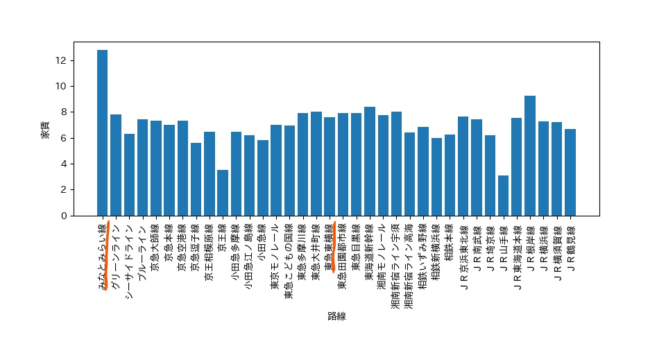
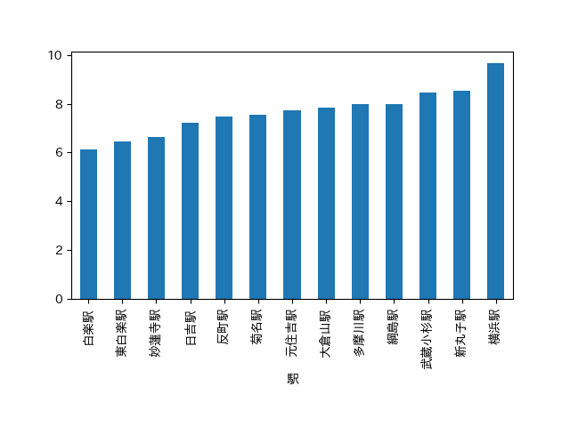
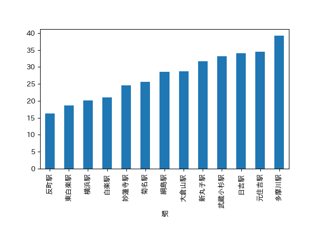

物件探しの理想条件
〈横浜や都内にアクセスがよく、神大のみなとみらいキャンパスにも横浜キャンパスにも通いやすい、家賃の安い家〉
各線の家賃比較

この図からわかるように、横浜に近く、神奈川大学に通いやすく、都内までのアクセスもいい路線でいうと、
横浜駅を通る路線の中で、みなとみらい線が圧倒的に高く、それに比べて東急東横線が比較的安いことがわかる。
東急東横線の各駅の家賃平均

次に、東急東横線の各駅の家賃平均を調べた。
このグラフを見ると「白楽」、「東白楽」当たりの家賃が安いことがわかる。
東急東横線の各駅の合計時間

このグラフは各駅からの合計時間を表したものです。
反町、東白楽、白楽の順で合計時間が少ないことがわかります。
この三つの結果から、私は東急東横線の「白楽駅」、「東白楽駅」周辺をおすすめ地域として紹介したいと思います。